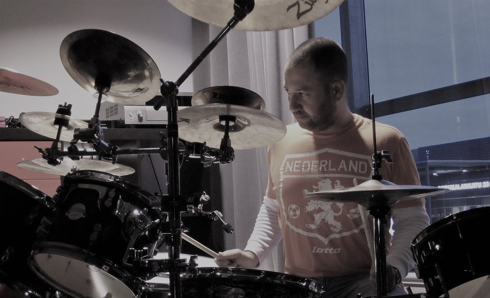
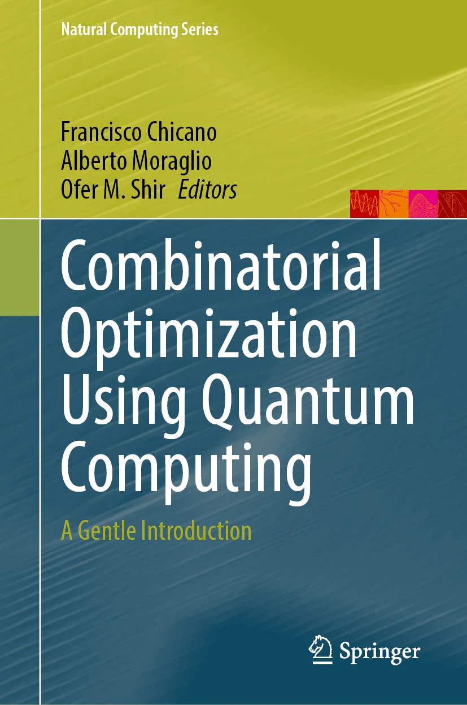

Slides · Preprints · Theses · Community
Talks & Materials



New book · expected October 2026
Combinatorial Optimization Using Quantum Computing: A Gentle Introduction
Springer. Jointly edited with Alberto Moraglio and Francisco Chicano.
Talks and tutorials
Seminars, conference presentations, tutorials and posters, with slides.
-
Oct 2026SlidesInteger optimization never diesComputer Science Seminar, University of Exeter, UK
-
Jun 2026SlidesMinor embedding is not so minorCEC'26 Quantum Track presentation · Maastricht, The Netherlands
-
Aug 2025PosterFoundations of Correlated Mutations for Integer ProgrammingFOGA'25 poster · Leiden, The Netherlands
-
Jul 2025SlidesCorrelated Geometric Mutations for Integer Evolution StrategiesGECCO'25 AABOH workshop presentation · Malaga, Spain
-
Jul 2025SlidesIntroductory Mathematical Programming for ECGECCO-2025 tutorial · Malaga, Spain
-
Sep 2024SlidesOvercoming Coupon Collector's Syndrome when Optimizing Multimodal DomainsMMMOO workshop at PPSN-2024 · Hagenberg, Upper Austria
-
Jul 2023SlidesOn the Behavior of the Mixed-Integer SMS-EMOAGECCO'23 AABOH workshop presentation · Lisbon, Portugal
-
Jun 2023SlidesMind the GapDagstuhl Seminar 23251, Challenges in Benchmarking Optimization Heuristics
-
Jul 2022ACM DLSequential Experimentation by Evolutionary AlgorithmsGECCO'22 joint tutorial with Thomas Bäck · Boston MA, USA
-
Jul 2022SlidesAlgorithmically-Guided Postharvest by Experimental Combinatorial OptimizationGECCO'22 presentation
-
Jul 2018SlidesCompiling a Benchmarking Test-Suite for Combinatorial Black-Box Optimization: A Position PresentationGECCO'18
-
May 2017SlidesFundamentals of ESs' Statistical LearningDagstuhl Seminar 17191, Theory of Randomized Optimization Heuristics
-
Jan 2017SlidesOn the Statistical Learning Ability of Evolution StrategiesFoundations of Genetic Algorithms Workshop, FOGA-XIV
-
Jul 2016SlidesComputational Intelligence in the Natural Sciences: Machine Learning, Optimization, and Heuristic SearchPrinceton University Seminar
-
Dec 2014SlidesPareto Automated RecommendationLIACS Colloquium
-
—SlidesOn Parameterizations and Randomized Search Heuristics in Computationally-Expensive Quantum Control Simulations[VENUE AND DATE]
Preprints and reports
Manuscripts on arXiv, ChemRxiv and bioRxiv.
-
arXiv2405.05978Addressing Unboundedness in Quadratically-Constrained Mixed-Integer ProblemsWith Guy Zepko
-
ChemRxivChemRxivTowards AI Research Agents in the Chemical SciencesPreprint
-
arXiv2303.00364Lessons Learned Report: Super-Resolution for Detection Tasks in Engineering Problem-SolvingReport
-
bioRxivbioRxivGWANN: Implementing deep learning in genome wide association studiesWith Nimrod Ashkenazy, Martin Feder and Sariel Hubner
-
arXiv2206.13630Toward an ImageNet Library of Functions for Global Optimization BenchmarkingWith Boris Yazmir
-
arXiv1806.03674On the Covariance-Hessian Relation in Evolution StrategiesWith Amir Yehudayoff
Theses
Doctoral and MSc dissertations I supervised, and my own.
-
PhD 2026Assaf Israeli — Soil Sampling Design for ECa-Based Texture Mapping: A Novel Quantile-Cluster Algorithm with High-Resolution Particle Size AnalysisHebrew University of Jerusalem · joint supervision with M.I. Litaor
-
PhD 2024LeidenVeysel Kocaman — Learning from small samplesUniversiteit Leiden · joint supervision with Thomas Bäck
-
MSc 2022Ido Dan — Developing models for soil texture classification from ancillary data using machine learningTel-Hai College · joint supervision with Iggy Litaor
-
MSc 2020Assaf Israeli — Multiobjective Optimization of Soil Sampling Design Using Information MetricsTel-Hai College · joint supervision with Iggy Litaor
-
MSc 2019Chen Erlich — Experimental Combinatorial Optimization of Phycobiliproteins' Expression in E.coliTel-Hai College · joint supervision with Dror Noy
-
PhD 2008Ofer M. Shir — Niching in Derandomized Evolution Strategies and its Applications in Quantum ControlUniversiteit Leiden · my doctoral thesis
Community and links
Events and service
- GECCO 2026 · 5th Quantum Optimization WorkshopSan Jose, Costa Rica · July 2026
- PPSN 2024 · MathProg TutorialHagenberg, Austria · September 2024
- JSS 2024 · COM3: Introduction to Quantum ComputingThe 33rd Jyväskylä Summer School, Finland · August 2024
- GECCO 2023 · ENUM TrackLisbon, Portugal · July 2023
- Dagstuhl Seminar 23251Challenges in Benchmarking Optimization Heuristics · June 2023
- EMO 2023Evolutionary Multi-Criterion Optimization, Leiden University · March 2023
- Dagstuhl Seminar 19431Theory of Randomized Optimization Heuristics · October 2019
- Dagstuhl Seminar 17191Theory of Randomized Optimization Heuristics · May 2017
Networks and tools
- COST Action 22137: ROAR-NETRandomised Optimisation Algorithms Research Network · MC Member IL; WG 2
- COST Action 15140: ImAppNIOImproving Applicability of Nature-Inspired Optimisation by Joining Theory and Practice · MC Member IL; WG 3
- IOHprofilerIterative Optimization Heuristics Profiler · web tool
- IOHprofiler on GitHubSource code
- IOHprofiler flyerPDF
- Niching in Evolution Strategies: An IntroductionOld page summarizing doctoral work on multimodal optimization
Groups and mentors
- Natural Computing Group at LIACSPhD Advisor I: Prof. Thomas Bäck
- AMOLF AmsterdamPhD Advisor II: Prof. Marc Vrakking
- Rabitz Group, Princeton UniversityPostdoc Host: Prof. Herschel Rabitz
- Leiden Institute of Advanced Computer Science (LIACS)Leiden University